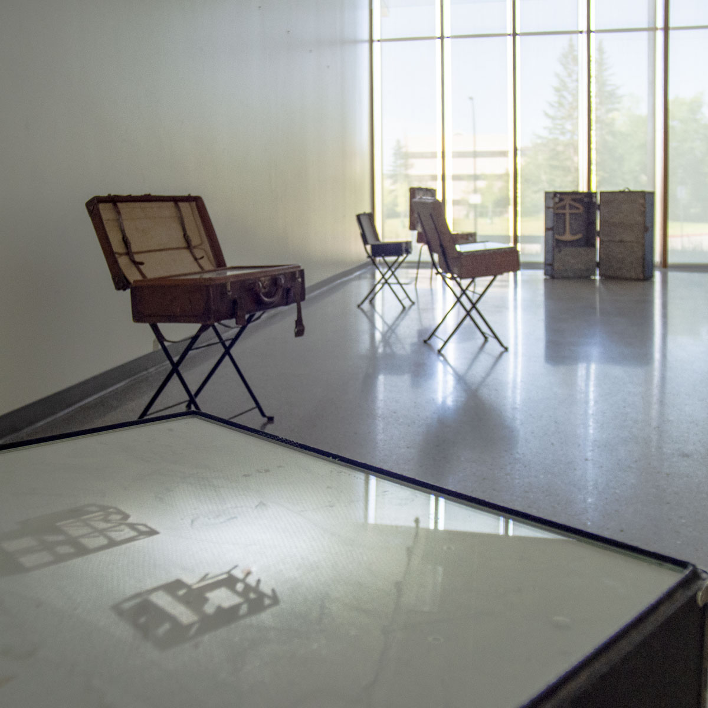
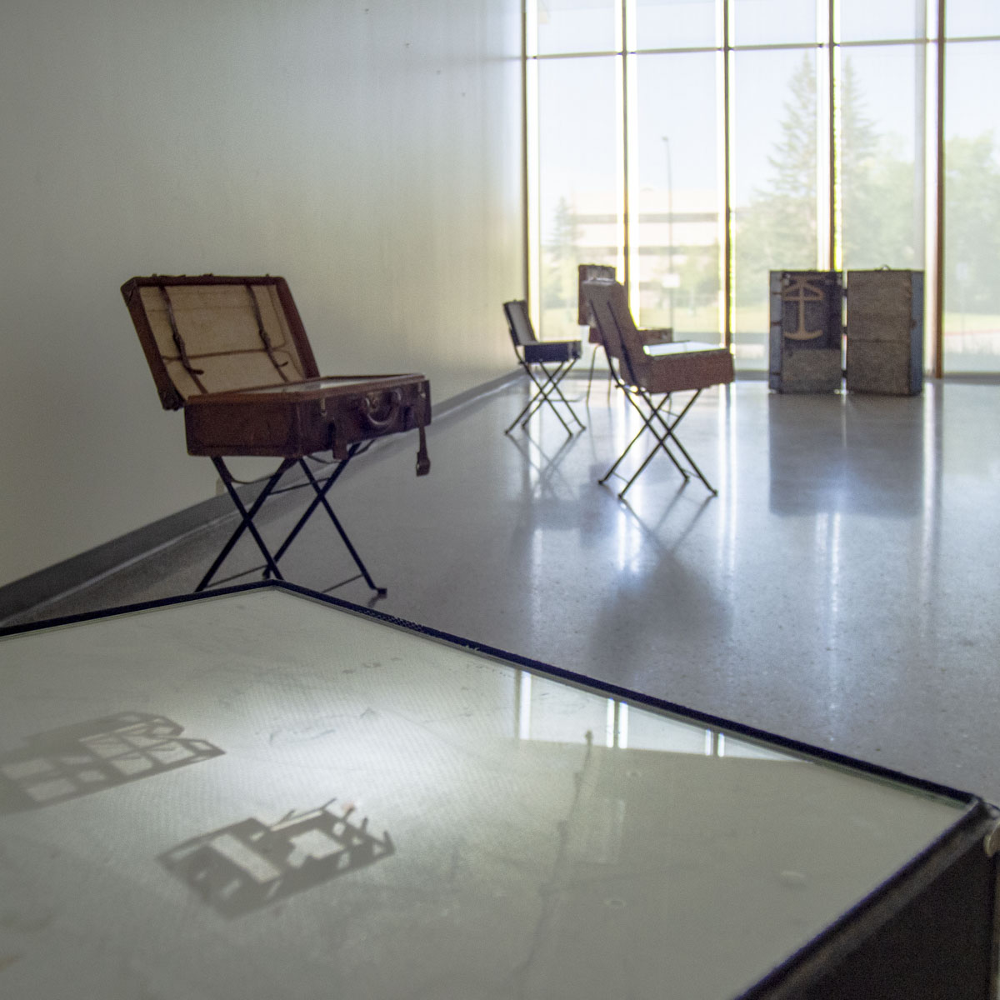

A Part of a Whole depicts the imaginary reconstruction of a built landscape occuring while exploring an abandoned townsite, presented in a series of suitcase that represent the individuals who lived within the buildings. The shadows are only seen when a light travels through each suitcase, progressing on to the next. The people were a part of the whole community, and the buildings were part of the foundations and holes left behind in the landscape.
This work consists of a series of suitcases arranged through a gallery on stands, each is open with glass covering the bottom where clothes would normally be. At any one time a single suitcase will have a light travelling through it, casting shadows of buildings on the glass. The glass is covered with a tissue paper that is poorly applied, sometimes torn, patched and stained. There are no wires to any of the suitcases, allowing a visitor to walk around each one, similar to the remaining foundations on the townsite.
This work is inspired by reflection on an earlier work, Bankhead, Revisited. This earlier work considered the remains of an abandoned townsite to share the experience of discovery within these locations. A Part of a Whole shares the imaginary rebuilding of such a site, presented within an empathy for those people who once inhabited the space.
The mine and townsite fo Bankhead, Alberta is a case study for these two artworks and consists of foundations, paths that used to be streets, meadows and piles of dark soil from the mining process. A unique part of it's status is the accessibility to the public and recorded history of the town and mine itself. You can have picnics among the foundations that remain, which are crumbled and overgrown with trees. This ability to walk around them is an important part of the choice for using wireless suitcases in this artwork.
This work is part of a body of work that explores my relationship to the abandoned and forgotten inhabieted spaces remaining from the Homestead Era in Canada.


 
